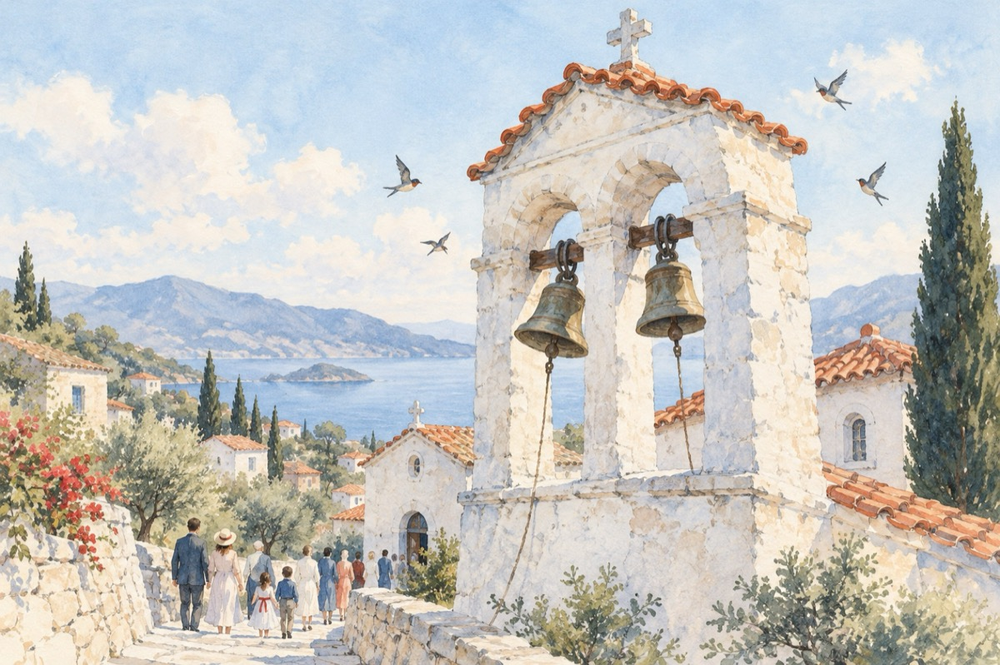

Sărbătoare
E duminică, bat clopotele la Pelion
În liniștea acestui colț de rai
Și credincioșii s-au trezit din somn
Iar păsările cântă precum Zamfir din nai
Lumea, încet, încet, coboară spre altar
Să-și facă ruga iertării de păcate.
Nevrednicia aici e un caz mai rău
E liniște și pace la Pelion cetate.
A fi turist aici e-o șansă, o plăcere.
Localnicii sunt unici, precum și acest munte.
Te simți de-al lor în suflet primenire
Și împlinirea plăcerilor dorite!
La Pelion astăzi e mare sărbătoare
Bat clopotele și slujba a-nceput.
Lumea-a ieșit pe străzi cu mic cu mare.
Veniți în raiul omului, ce el l-a conceput!
Vasile Groza